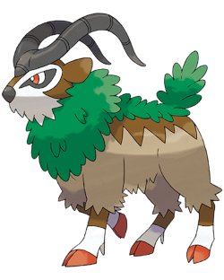
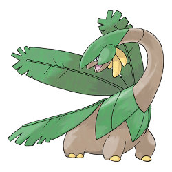
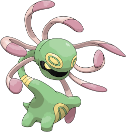
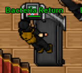

Por ser naturia, o time do bactéria é composto por pokemons do tipo planta
Shiny sceptile +70 atk 7 PB

Gogoat +70 Def 6 (bactéria não quer soltar o escorpião do bolso, logo ta fora da pb)
Logo logo terá uma shiny tangela hehe
Sceptile +50 Atk 6 PB com addon (wtf pokemon +50?)
Tropius +70 Atk 5
Shiny Kricketune +70 Atk 6 com addon (foto feia da desgraça)
Kricketune +10 Critical 6 PB (vsf tankei foi nothing)
Cradily +70 Def 6 (gold falido, n tem addon de cradily)
Atualmente esse é o time do bactéria, porém tenho certeza que ele irá comprar o resto da rotação ❤
Enquanto isso vai usando os t1h da house memo
Para voltar ao início, clique aqui